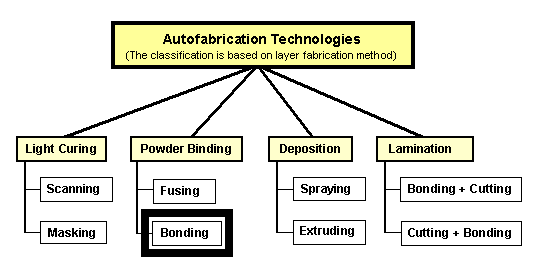
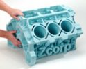
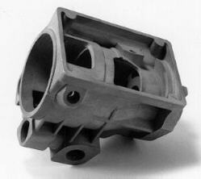
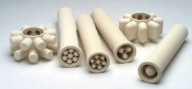

|
|
|
| Home | Previous Page
| Next Page |
Autofabrication Technologies > Powder Binding > Bonding:

Not: Þemadaki baþlýklarý týklayarak, direkt açýklama sayfalarýný görebilirsiniz.
Toz halindeki hammaddenin
seçilen kýsýmlarýna bir yapýþtýrýcý (harç) malzemesi püskürtülerek
biribirine baðlanmasý.
- Z
Corp. (ABD), 3D Printing
- Extrude
Hone (ABD), ProMetal 3DP
- Soligen
Inc. (ABD), DSPC
- Specific
Surface Corp. (ABD), 3DP, Seramik Filtre Ýmalatý.
- Therics
Inc. (ABD), 3DP, Ýlaç kapsülü imalatý
- Generis
GmbH (Almanya), GS 1500, Kum döküm kalýbý inþasý
- Formus
Inc. (ABD) Kum tanelerini erimiþ balmumu püskürterek
yapýþtýrma
- Buss
Müller Tech. GmbH (Almanya), 3D colour printer
|
| MIT/
3D Printing (3 Boyutlu Yazýcý) teknolojisi: |
|
Orijinal
olarak ABD'nde Massachussets Teknoloji Enstitüsü'nde
(MIT, Massachussets Institute of Technology) geliþtirilen
3DP (3 Dimensional Printing) 3 boyutlu yazýcý prosesinde
inþaý hammaddesi olarak plastik, metal, seramik, veya
herhangi baþka bir toz kullanýlabilir. Çok aðýzlý bir
memeden yapýþtýrýcý püskürtülerek tozlar birbirine baðlanýr.
Bir merdane ile yeni bir katman toz yayýlýr. Ýnþa bittikten
sonra, parçayý çevreleyen ve ayný zamanda destek malzemesi
görevi görmüþ olan tozlar temizlenir (vakum temizleyici
ve/veya fýrçayla). Kullanýlan malzeme ve uygulamaya
göre, infiltrasyon ve sinterleme gibi deðiþik ek iþlemler
de yapýlabilir.
Saðda,
Ýstanbul'daki Ayasofya Camisi'nin bir modeli,
MIT'deki Ar-Ge çalýþmalarý kapsamýnda (niþasta kullanýlarak)
inþa edilmiþtir.
MIT, farklý sektörlere
hitaben verdiði 3DP teknolojisi lisanslarýyla, Z Corp.,
Extrude Hone/ ProMetal, Soligen, SpecificSurface ve
Therics isimli, 5 yeni firmanýn kurulmasýna öncülük
etmiþtir. Bu firmalarýn her birine sadece belli bir
toz malzemelerin kullanýmý için lisans verilmesine raðmen
seramik konusunda birçok firmaya birden üretim hakký
verilmiþtir (Soligen, SpecificSurface, Extrude Hone/
ProMetal, Z Corp.)
|
|
1994
yýlýnda MIT'den Dr. Walter Bornhorst ve Marina I. Hatsopoulos
tarafýndan kurulan Z Corp., MIT'den aldýðý 3DP lisansý
ile ürettiði cihazý ilk kez Þubat 1997'de basýna duyurmuþtur.
Ýlk ticari cihaz, niþasta tozu üzerine su tabanlý yapýþtýrýcý
bir sývýyý 125 adet meme vasýtasýyla püskürtüyordu.
Saðda, 3DP prosesine ait animasyondan
bir kare gözükmektedir. Üretilen parçalara erimiþ mum,
üretan veya "cynoacrylate" tabanlý yapýþtýrýcýlar
(genellikle japon yapýþtýrýcý diye adlandýrýlýr) emdirilerek
mukavemeti arttýrýlabilir. Mum emdirilmiþ parçalar hassas
döküm modeli olarak, esnek üretan emdirilen parçalar
ise lastik parça prototipleri olarak kullanýlabilirler.
Niþasta (starch) tabanlý tozlara ek olarak sonralarý
alçý (plaster) ve kompozit alçý tabanlý tozlar da kullanýma
sokulmuþ ve daha mukavemetli parçalarýn inþasý mümkün
kýlýnmýþtýr. ZCast ticari ismi verilen bir teknikle
de alçý-seramik karýþýmlý toz kullanýlarak direkt metal
döküm kalýbý da inþa edilebilmektedir.
2005 yýlýnda Z Corp, Contex Holding A/S (www.contex.com) tarafýndan satýn alýnmýþtýr. Kasým 2005'den itibaren ise contex, ZCorp tarafýndan üretilen bazý 3D printer modellerini özellikle mimari modelleme/maket uygulamalarýna yönelik olarak kendi markasýyla da pazarlamaya baþlamýþtýr; www.contex.com/3dprint
Aþaðýda, farklý
modeller bir arada görülmektedir:
ZPrinter
310 System
Bu sistem Þubat 2003'de ZT400 modeli yerine piyasaya
sürülmüþtür. Önceki modele kýyasla yaklaþýk 3-4 kat
daha yüksek bir inþa hýzýna sahiptir. Bu model, HP Printer
kartuþu kullanmaktadýr.
Ýnþa Zarfý: 203 x 254 x 203 mm
Katman Kalýnlýðý: 0.076-0.254 mm arasýnda seçilebilir
Jet sayýsý: 300 jetli bir adet HP yazýcý kafasý
Spectrum
Z510 System
(Renkli 3D yazýcý)
Þubat 2005'de piyasaya sürülen bu sistem ZT406 System'e
kýyasla daha büyük bir inþa zarfýna sahiptir ve daha
yüksek çözünürlüðe sahip renkli modeller inþa edebilir.
Ýnþa Zarfý: 254 x 356 x 203 mm
Ýnþa Hýzý: 2 katman/dak. (24-bit renkli)
Katman Kalýnlýðý: 0.089 - 0.203 mm arasýnda seçilebilir
Çözünürlük: 600 x 540 dpi
Jet sayýsý: 1200 (300 jetli 4 adet HP yazýcý kafasý)
Malzeme: Kompozit plastik tozu ve direkt metal döküm
için seramik tozu
ZT406
SYSTEM (Renkli 3D yazýcý)
2000 yýlýnda piyasaya sürülen bu sistem ilk renkli 3D
yazýcý modelidir.
Ýnþa Zarfý: 203 x 254 x 203 mm
Katman Kalýnlýðý: 0.076-0.254 mm arasýnda seçilebilir
Ýnþa Hýzý: 6 Katman/dak. (renksiz), 2 katman/dak. (renkli)
Jet sayýsý: 1200 (300 jetli 4 adet HP yazýcý kafasý)
ZT810
SYSTEM (Renkli
3D yazýcý)
Ýnþa Zarfý: 500 x 600 x 400 mm
Katman Kalýnlýðý: 0.076-0.254 mm arasýnda seçilebilir
Jet sayýsý: 2400 (300 jetli 8 adet HP yazýcý kafasý)
ZT810
SYSTEM ilk
defa 28 Kasým 2001 tarihinde Almanya'nýn Frankfurt þehrinde
düzenlenen Euromold 2001 Fuarý'nda sergilenmiþtir.
ZT400
3D PRINTER
Ýnþa Zarfý: 203 x 254 x 203 mm
Ýnþa Hýzý: 2 Katman/dakika
4 Mart 2002'de piyasaya çýkarýlan bu model, Þubat 2003'de
ticari hale gelen ZPrinter 310 System'in ardýndan üretimden
kalkmýþtýr.
Renkli
model inþa örnekleri:
En saðda görülen yüksek çözünürlüðe sahip küçük model
Spectrum Z510 System ile inþa edilmiþtir.
Z Corp., Dünya'daki
ilk ticari 3 boyutlu ve çok renkli model inþasýný mümkün
kýlan makineleri üretmiþtir. Bu sistemlerde 2001 yýlýnýn
ilk yarýsýnda HP firmasýnýn standart renkli ink-jet
printer kartuþlarý kullanýlmaya baþlanmýþtýr. Ýnþa edilecek
parçaya ait STL formatýndaki 3D geometri verisinin istenildiði
gibi reklendirilebilmesi için ise Belçika menþeli Materialise
yazýlým firmasý tarafýndan "Magics Z" isimli özel bir
CAD yazýlýmý geliþtirilmiþtir.
|
|

Solda, Z400 ile
yapýlmýþ bir motor bloðu modeli. Ortada, Wescast
Industries tarafýndan inþa edilmiþ bir egzost manifoldu
modeli. Saðda, ZT810 ile inþa edilmiþ 457 x 483
x 330 mm ebadýnda, 1:1 ölçekli bir motor bloðu modeli
görülmektedir.
Solda, Orion
(Boston, MA, ABD) firmasý tarafýndan tasarlanan, el
tipi estetik cerrahi lazer cihazýnýn modelleri. Ortada,
Adidas için tasarlanan ayakkabý taban modelleri. Saðda,
CT verisine baðlý olarak inþa edilmiþ bir çocuða ait
kafatasý modeli görülmektedir.
Ýlgili Video (Zprinter 450):
www.youtube.com/watch?v=g0m1cVqNsRA
ZCast
Prosesi ile direkt döküm kalýbý inþasý:
Ekim
2002'de duyurulan bu yeni uygulama ile alçý-seramik
karýþýmlý bir çeþit inþa malzemesi kullanýlarak prototip
döküm kalýp ve maçalarý direkt olarak inþa edilebilmektedir.
ZCast 500 isimli bu toz inþa malzemesi ile alüminyum,
çinko ve magnezyum gibi düþük ergime sýcaklýðýna sahip
paslanmaz metaller dökülebilmektedir. Yüksek ergime
sýcaklýðýna sahip çelik alaþýmlarýnýn dökümünde kullanýlabilecek
seramik toz geliþtirme çalýþmalarý ise devam etmektedir*.
Saðda, ZCast prosesi ile elde edilmiþ bir döküm kalýbý,
maçasý ve bu kalýptan dökülmüþ alüminyum bir parça görülmektedir.
*Aslýnda Soligen firmasý, yine
ZCorp gibi MIT'den aldýðý 3DP lisansý ile yýllar öncesinden
çelik alaþýmlarýn hassas dökümünde kullanýlan direkt
seramik kalýp inþa teknolojisini geliþtirmiþti...
Uygulama Sahalarý > Sanat > Z
Corp.
|
|
MIT'de
geliþtirilen 3DP teknolojisinin metal
toz malzeme kullanýmý konusundaki lisans hakkýný Extrude
Hone (ABD) firmasý almýþtýr. Extrude Hone, seramik
toz kullanýmý konusunda da birçok lisansörden birisidir
ve bu lisansa baðlý olarak 2003 yýlýnda kum döküme yönelik
RCT sistemini geliþtirmiþtir.
ProMetal,
ABD'nde yeni imalat teknikleri (non-traditional machining)
konusunda teknolojiler geliþtirme konusunda köklü bir
geçmiþe sahip olan Extrude Hone firmasýnýn bir giriþimi
ve markasýdýr.
Saðda
ise sistemin ana parçalarý görülmektedir: Bir merdane
(metal powder spreader) ile inþa yüzeyine yayýlan metal
tozlarý yazýcý kafasýndan (print head) yapýþtýrýcý püskürtülerek
birbirine baðlanýr. Ardýndan kýzýlötesi ýþýma veren
bir ampül ile yüzey kurutulur ve inþa platformunun altýndaki
pistonun (build piston) bir katman kalýnlýðý kadar aþaðý
çekilmesinin ardýndan yeni bir toz tabakasý serilir.
Bu iþlemlerin tekrarý sonucu kalýp veya parça sinterleme
fýrýnýna konulur. Sinterleme
sonrasýnda kalan boþluklara yine fýrýn içinde bronz
emdirilir. Sonuçta %60 çelik ve %40 bronzdan oluþan
bir parça veya kalýp elde edilmiþ olur.
Daha önceleri elindeki
autofabrication sistemiyle sadece dýþarý servis veren ProMetal,
2002 son yarýsýnda ticari olarak R serisi yeni 3 autofabrication
cihazýný duyurmuþtur. Daha sonra R4 serisinin üretimine
devam edilmemiþþtir. 2004 baþý itibariyle ticari halde
bulunan ProMetal R2 ve R10 sistemleri ve teknik özellikleri
aþaðýda görülmektedir:
|
|
|
|
|
R2
System
|
R10
System
|
Ýnþa
sonrasý püskürtme
kafasý ve parçalar
|
Teknik
özellikler:
- R2
System:
Ýnþa zarfý: 190 x 190 x 150 mm
Yazýcý kafasý meme sayýsý: 64
Meme baþýna damlacýk püskürtme frekansý: Saniyede
6000 adet
Damlacýk yerleþtirme hassasiyeti: +/- 0.025 mm
- R10
System:
Ýnþa zarfý: 1000 x 500 x 250 mm
Ýnþa hýzý: 4100 cc/saat
Yazýcý kafasý meme sayýsý: 8, 32, veya 96
Meme baþýna damlacýk püskürtme frekansý: Saniyede
30,000 - 50,000 adet
Damlacýk yerleþtirme hassasiyeti: +/- 0.025 mm
|
|
|
|
|
Sinterleme
fýrýný
|
Sinterleme
öncesi ve sonrasý
çelik piston kolu
|
Sinterleme
sonrasý
alüminyum parça
|
Solda,
sinterleme öncesi (beyaz) ve sonrasý bir metal parça
prototipi, saðda ise inþa platformunda bulunan
ham metal tozlarý, üretilmiþ kalýp ve parçalar ile ink-jet
yapýþtýrýcý püskürtme kafasý görülmektedir. Saðdaki
resimde ise alüminyum alaþýmýyla inþa edilmiþ karmaþýk
geometriye sahip bir model görülmektedir.
Kalýp
imalat uygulamalarý:
ProMetal, 14 Kasým 2002'de yaptýðý bir basýn duyurusu
ile ismini açýklamadýðý ABD tabanlý bir otomotiv üretici
firmaya 740 mm x 500 mm x 60 mm ebadýnda, çelik dökümde
kullanýlan köpük kalýbý (lost-foam tool) ürettiðini
duyurmuþtur. R10 system ile inþa edilen bu kalýp o tarihe
kadar dünyada autofabrication tekniði ile üretiien en büyük
metal kalýp özelliði taþýmaktadýr. ProMetal, Euromold
2003 fuarýnda maça imalatýna yönelik büyük ebatlý birçok
metal kalýp sergilemiþtir.
|
|
|
Yukarýda:
MIT'deki ilk test numuneleri; içinde soðutma kanallarý
bulunan paslanmaz çelik plastik enjeksiyon kalýbý
ve bu kalýp ile imal edilmiþ plastik parçalar
(saðda) görülmektedir.
|
Kum
döküm için kalýp ve maça üretim sistemi:
(ProMetal RCT - Rapid Casting Technology)
ProMetal,
seramik toz kullanýmý konusunda MIT'nin lisans verdiði
birçok firmadan biridir. ProMetal Generis
tarafýndan geliþtirilen teknolojiyi de bünyesine katarak
kendi sistemlerini ticari hale getirmiþtir. Generis
GmbH isim deðiþtirerek ProMetal RCT GmbH adýný almýþtýr
(www.prometal-rct.de).
Sonuçta, ProMetal'e ait Metal tozu kullanan sistemler
ABD'nde imal edilmesine karþýn seramik tozu kullanan
sistemler Almanya'da üretilmektedir:
ProMetal,
kum dökümle imal edilecek prototip parça imalatýna yönelik
olarak geliþtirdiði ProMetal RCT S15 System'i ilk kez
Euromold 2003 fuarýnda sergilemiþtir. Bu sistem 1500mm
x 750mm x 750mm inþa zarfýna sahiptir ve ink-jet kafasý
bir gaçiþte 80mm geniþliðinde bir alaný tarar:
|
|
|
|
ProMetal
RCT S15 System (saðda, inþa sonrasý
gevþek tozlarý temizleme ünitesi görülmektedir)
|
Tek
paride üretilmiþ farklý
kalýp ve maçalar
|
Saðda,
bu sistemle inþa edilmiþ bir kum döküm kalýp ve maçasý
ile bu kalýba dökülerek imal edilmiþ metal motor manifoldu
görülmektedir.
Sistem,
inþa malzemesi olarak standart döküm kumuyla ayný özelliklere
sahip seramik bir toz kullanýr.
|
MIT'de geliþtirilen 3DP (3DP= 3 boyutlu yazýcý) teknolojisinin
seramik malzemelerde kullaným lisansýný satýn alarak 1991
yýlýnda kurulan Soligen, 1993 yýlýnda ilk ticari sistemini
üretmiþtir.
Soligen'in DSPC
(Direct Shell Production Casting, Direkt Kabuk
Ýmalatýyla Döküm) tekniðinde önce üretilecek parçanýn
CAD verisi kullanýlarak hassas döküm aðacý ve seramik
kabuk üç boyutlu olarak bilgisayardaki özel bir yazýlýmla
tasarlanýr (bir türbin kanatçýðý dökümünü gösteren örneðe
ait aþaðýdaki 1., 2. ve 3. resimlere bakýnýz). Ardýndan,
yukarýdaki resimde gösterilen DSPC cihazýnda bir
merdane ile ince bir tabaka halinde yayýlan seramik tozu,
özel bir yapýþtýrýcý sývýnýn yüzlerce memeden oluþan bir
püskürtme kafasýyla püskürtülmesiyle istenilen noktalarda
birbirlerine baðlanýr (4. ve 5. resimler). Tüm döküm aðacý
bu iþlemlerin defalarca tekrarlanmasýyla katmanlar halinde
inþa edilir (6. resim). Son olarak, destek malzemesi görevini
üstlenmiþ olan gevþek tozlar boþluklardan dökülür (7.
resim) ve hassas dökümle metal parçalar imal edilir (8.
resim).
Sonuçta, hassas
döküm yöntemi için gerekli olan seramik kabuðun bir
mum modele ihtiyaç duyulmadan direkt olarak hýzlý bir
þekilde inþa edilebilmesiyle, döküm çok daha hýzlý bir
þekilde gerçekleþtirilmiþ olur. |
|
Saðda, seramik tozu kullanýlarak
imal edilmiþ bir hassas döküm kalýbý ve kesiti. Görüldüðü
gibi inþa sýrasýnda parça içinde boþluk býrakýlabiliyor.
Yukarýdaki huni þekli
ise erimiþ metalin kalýba rahat dökülmesi için verimiþtir.
|
| 
Saðda görülen, DSPC
tekniðiyle 356-T6 alüminyumdan dökülmüþ, yaklaþýk 18x13x15cm
ebadýnda karmaþýk geometriye sahip bu yakýt enjeksiyon
kutusundan 4-8 adedi 10 gün içinde (test amacýyla prototip
olarak) imal edilmiþtir.
Soligen autofabrication cihazlarýný
satmak yerine dýþarýya servis vermeyi tercih etmektir.
Ýnternet üzerinden müþteriden aldýðý 3 boyutlu geometri
verisini kullanarak alüminyum veya çelik parçalarý bir
hafta içinde hazýr edip geri postalayabilmektedir. Bu
iþlem normalde 3-4 ay civarýnda sürebilir...
|
1995
yýlýnda faaliyete geçen bu firma MIT'de geliþtirilen
3DP autofabrication teknolojisini seramik filtre üretiminde
kullanýlmak üzere lisanslamýþtýr. Bilgisayar ile tasarlanan
filtre istenilen yoðunlukta ve geometride üretilebilir.
Bu filtreler klasik yöntemle imal edilenlere kýyasla
10 kat fazla performans gösterebilmektedirler...

|
|
Therics,
3DP teknolojisinin ilaç kapsülü yapýmýnda kullanýmý
konusundaki lisansýn sahibidir. Ýnþa hammaddesi olarak
çeþitli ilaç tozlarý ve baðlayýcýlar kullanýlýr.
 
Solda, Theriform
3100 cihazý görülmektedir. Bu cihaz 32 memeden malzeme
püskürtebilmektedir ve saatte 60,000 adet tablet üretme
kapasitesine sahiptir.
Saðda, Üretilmiþ
bir tablet ve kesiti görülmekte. |
|
Generis
GmbH Mayýs 1999'da Dr. Ingo Ederer, Prof. Heinzl ve
Rainer Höchsmann tarafýndan kurulmuþtur.
Ýlk
ticari model GS 500 Kasým 2000 tarihindeki Euromold
2000 fuarýnda sergilenmiþtir.
Saðda
görülen GS 1500 modeli ile metal döküm kalýplarý, ince
katmanlar halindeyayýlan standart döküm kumuna termoset
bir baðlayýcýnýn püskürtülmesiyle inþa edilir.
GS
1500 teknik özellikleri:
Ýnþa Zarfý: 1500 mm x 750 mm x 750 mm
Katman kalýnlýðý: 0,3 mm
Çözünürlük:
0,3 mm
Hassasiyet: %0,1
2003
yýlý sonunda, ABD tabanlý Extrude Hone firmasý Generis'i
bünyesine katmýþtýr. Artýk firma ProMetal RCT GmbH (www.prometal-rct.de)
adý altýnda faaliyet göstermektedir ve ilgili sistemler
ProMetal firmasý tarafýndan RCT (Rapid
Casting Technology) adý altýnda üretilmektedir
(GS
1500 modeli sistem de ProMetal
RCT S15 ismiyle pazarlanmaktadýr).
Harç Yýðma > Püskürterek > Generis
Gmbh
|
| Saðda:
Formus firmasýnýn autofabrication cihazý. Küresel tanelerden oluþmuþ
ince bir cins kumu, katman katman yayarak her katmanda
(bilgisayar kontrollü olarak) gerekli noktalara erimiþ
mum püskürtüp yapýþtýrýr. Daha sonra, destek malzemesi
iþlevini de görmüþ olan serbest kum dökülerek inþa edilmiþ
parça ortaya çýkartýlýr. |

Saðdaki kalýp Harvard Üniversitesi'nde
yürütülen bir proje çerçevesinde imal edilen ve güneþ
enerjisiyle çalýþacak aerodinamik yapýlý bir aracýn fiberglas
gövdesinin üretiminde kullanýlmak için inþa edilmiþtir.
Formus firmasýnýn autofabrication cihazý ucuz bir hammadde ve
basit bir teknoloji kullandýðýndan özellikle büyük parçalarýn
modellenmesi için uygundur... |
Orijinal olarak Hollanda'lý
araþtýrmacý A. Van der Geest, tarafýndan geliþtirilen
ve "Full color 3D printer" ismiyle kendi web sitesinde
(home.wxs.nl/~spitstec)
birçok örnek parça resimleri verilen bu cihazýn ileride
hedeflenen ticari üretim ve satýþýný Buss Müller Technology
GmbH üstlenmiþtir. (BMT GmbH, ayný
zamanda High
Precision ModelerT 700 isimli farklý bir cihazýn da
pazarlayýcýsýdýr)
3D colour printer
cihazýnýn çalýþma detaylarý konusunda web sitelerinde
yeterli bilgi verilmemekle beraber, üretilen renkli modellere
bakýldýðýnda Z Corp. (3DP) teknolojisiyle
çok benzerlik gösterdiði anlaþýlmaktadýr. Dýþ ölçüleri
455 X 440 X 290 mm, aðýrlýðý 13kg olan henüz prototip
aþamasýnda olan bu cihaz, 200 X 150 X 100 mm ebadýnda
bir inþa zarfýna sahiptir.
Solda, prototip
aþamasýnda olan bu cihazýn temsili bir resmi, ortada,
bu cihazla üretilmiþ çeþitli renkli modeller, saðda
ise 40 dakikada inþa edilmiþ 135 X 50 X 45 mm ölçülerinde
renkli Porsche otomobil modeli görülmektedir.
(Saðdaki iki resmi daha büyük görmek için üzerlerini týklayýnýz) |
| Home | Previous Page
| Next Page | |
|